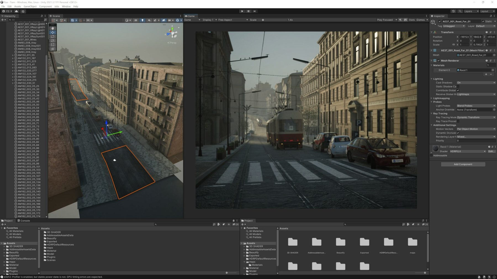

Why game development is the ultimate creative skill
Art, design, mechanics and programming, all in one discipline.
Read more →Advice on learning game development, Unity, Blender and more.

Art, design, mechanics and programming, all in one discipline.
Read more →Everything you need to start making games on your own PC.
Read more →
Games development is the most creative artform you can possibly engage in. A single game brings together art, design, mechanics and programming, and each one has to work alongside the others.
That's what makes it such a powerful thing to learn. Building a game teaches critical thinking and problem solving: working out why a jump feels wrong, why an enemy gets stuck, or how to make a level easier to read. That mindset carries over into many other disciplines in life.
Whether you're studying a games course or just curious, the skills you build are useful well beyond games, from virtual and augmented reality to mobile apps and interactive media.
↑ Back to all postsOne of the best things about learning game development today is that the professional tools are free to start with.
Unity is the software used to make games. Download Unity Hub from unity.com/download, then use the Hub to install a version of the Unity editor.
Blender is used to create game "assets" and animations. It's free and open source. Download it from blender.org.
Unity's free Create with Code course is a great first step, and you'll find more videos on our Resources page.
↑ Back to all postsAll of our tuition happens remotely over Discord, so you learn at home on your own gaming PC.
Before your first session we'll talk about your goals. That might be extra help with a college games course, a specific project in Unity or Blender, or starting from scratch. From there we'll plan a strategy that suits you.
After each session you'll be given tasks to complete in your own time, based on what we covered. Sessions are £35 per hour, and you can book as few or as many as you like to fit your schedule.
Our tutors are Certified Unity Developers with a full DBS check. Send us a message to get started.
↑ Back to all posts